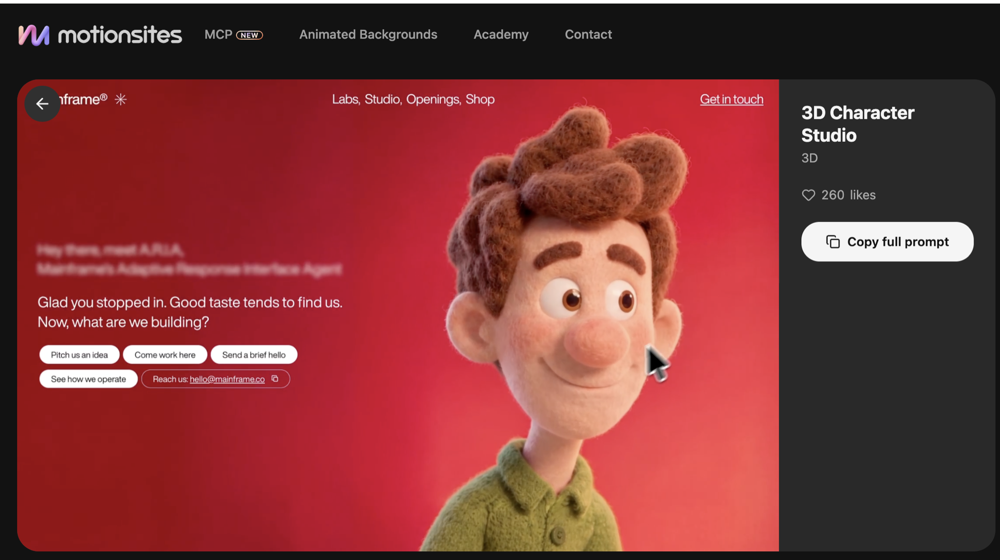

Start with a page.
Use a landing page, Framer site, or free animated preview. Inspect it, rebuild its design direction, then adapt it for your product.
Choose the input
Start with a page you want to study, or a prompt you can copy. Both give AdaL enough direction to begin the build.
Use a landing page, Framer site, or free animated preview. Inspect it, rebuild its design direction, then adapt it for your product.
Use an AI-native prompt from MotionSites, 21st.dev, Magic UI, or another available library. Replace the product details and build.
Clone a reference
The reference is a source of visual facts. Gather them before you write the page.
Capture desktop, tablet, and mobile views of the reference.
Read colors, fonts, spacing, assets, and animation rules from the live page.
Use video to study sequence, timing, and easing frame by frame.
Available prompt
A prompt library gives you a finished design direction as text. Keep what you like; replace the details that make the page yours.
No-pay option: use a free preview as a clone reference, or copy a free prompt or component from an available library.
